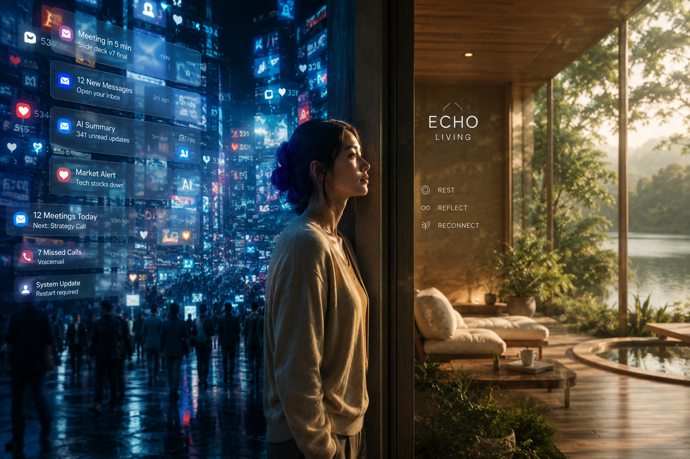

The Human Behind the Narrative
Meet Sofia Martínez
By day, Sofia shapes digital user experiences. By night, she finds herself drowning in them. Surrounded by a relentless web of unread emails, overlapping deadlines, and a constant influx of system notifications, she faces a modern silent crisis: chronic digital overload and cognitive exhaustion. Her physical workspace has completely dissolved the boundaries of her home, leaving her no room to breathe.
Step Into Her Sanctuary
This is where the paradigm shifts. When Sofia returns home, the noisy data ecosystem of the outside world drops away. ECHO Living functions as an ambient emotional guardian embedded within her architecture. There are no intrusive screens or extractive alerts. Instead, soft lighting, calm textures, and natural landscapes adjust to her fatigue level, letting her rest and focus on what truly matters.
